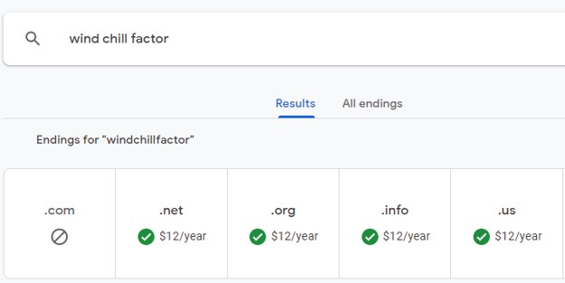

Name of Site: Wind Chill Factor
Domain availability
The domain name is available in google for the endings of .net. .org. info and .us at a cost of $12 dollars a year.
Site Purpose
The purpose of this website is to provide an accurate weather forecast for the cities of Preston, Soda Springs and Fish Heaven with a corresponding image for each. Each town weather pages contain weather conditions and other town information or relevant articles/content. All the images in the website will reflect the current weather condition data on the town pages and the towns themselves. It will also contain a section for weather related pictures, which the users can contribute to (with photos) and a page for storm updates.
Wind Chill Factor Logo